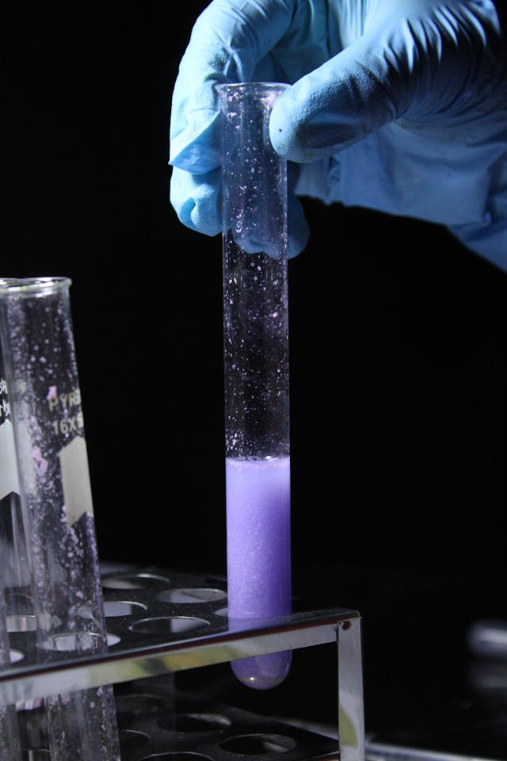

// Our Ethos
Here at Waters of Leith, we truly believe you should take control of your dreams. We help you achieve that by letting you decide when you sleep. Once you have control of your nightlife, you can really start to dream.
Operating out of Leith, Edinburgh, we have used the power of science to give you maximum control of when you sleep. The days of feeling your eyes starting to sink at the club are over.